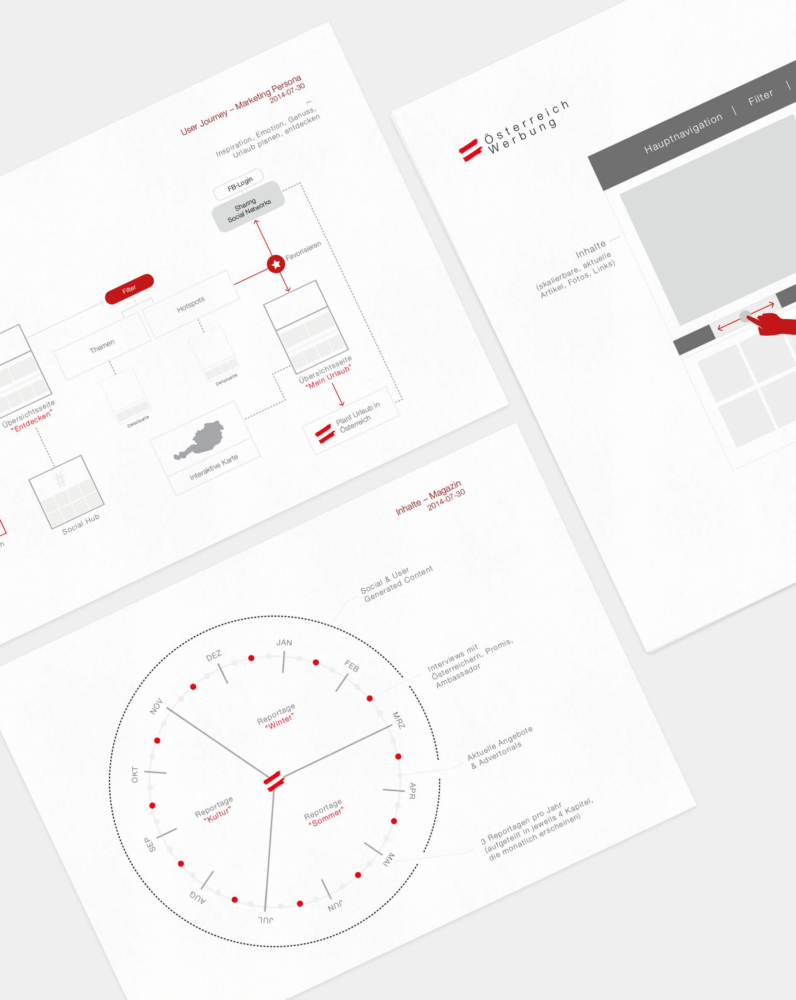

austia tourism
online appearance
Relaunch and conception of the existing website and upcoming online magazine for the official tourism platform of Austria were the main objectives. The appearance will represent Austria as a country with traditional values and a modern attitude.
Digital Strategy
Digital Strategy A research and concept phase which referred to an existing brand strategy set the course at the beginning of this project. General use cases based on personas, information architecture and detailed wireframes for the whole digital appearance followed.
This appearance was structured into modules with a limited amount of additional functionalities and supportive tools which build the framework for an engaging experience.
This approach provided a number of possibilities for the content team to setup unique pages without forcing relevant and well elaborated content into steady templates.
Wireframes and Navigation
Austria Tourism asked for very detailed wireframes for both desktop and mobile devices to eliminate possible doubts at an early stage.
Especially the navigation concept which was tested with interactive click dummies was quite a challenge because of the huge amount of content that should have been neatly structured at this point.
Interactions and Workflow
Most interactions were displayed statically with descriptive graphics to enable the start of the design process right after finishing a wireframe sprint. The sprints of this phase were kept short and crisp to allow multiple iteration cycles if needed.
Client: Austria Tourism
Agency: LOOP New Media